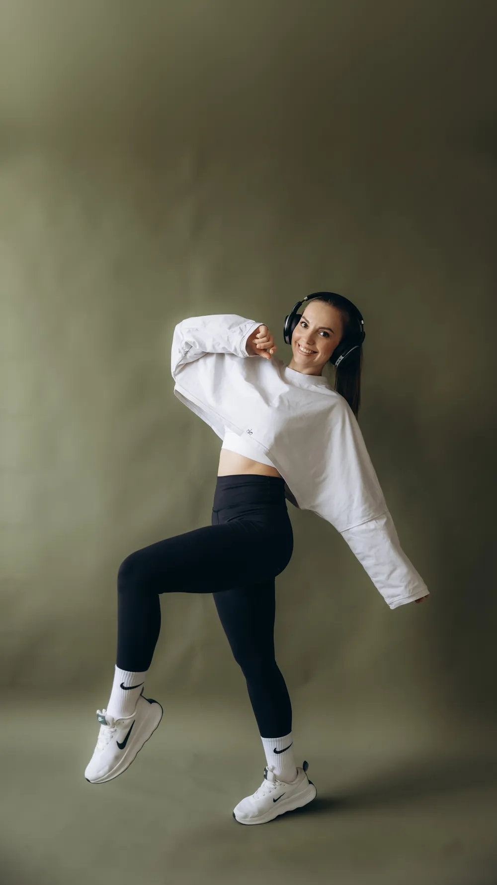
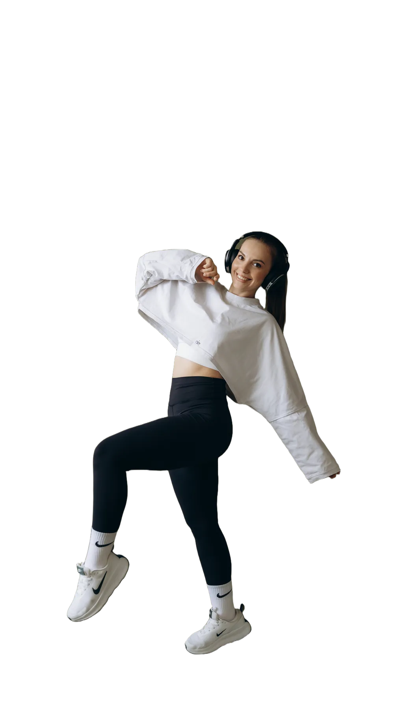

Худеемвместе

4 недели
Тренировки · питание · жёсткий контроль тренера
Приз 5 000 ₽ на Ozon или Wildberries
Четыре недели вы не одни: три тренировки в неделю, меню на каждый день и чат, где я отвечаю.
Объясняю, как питаться самостоятельно — что есть, сколько и почему вес стоит. Чтобы после марафона вы знали, что делать дальше, а не возвращались к тому, с чего начали.
Беру восемь человек, больше не беру: хочу видеть каждую.
- Оплачиваете — и пишете мне в MAX, я добавляю вас в чат группы.
- 9 ноября начинаем: знакомимся и делаем замеры — вес, объёмы, фото.
- Три раза в неделю присылаю тренировку, вы делаете и отмечаетесь в чате.
- По воскресеньям — меню на неделю с граммовками.
- Через четыре недели — финальные замеры и призы.
Что входит
- 12 домашних тренировок по 30–40 минут — для любого уровня.
- Меню на 28 дней с граммовками и рецептами.
- Разбираем, как питаться самостоятельно: что, сколько и почему.
- Ответы на любые вопросы — каждый день в закрытом чате.
- Жёсткий контроль тренера: отмечаетесь после каждой тренировки, я вижу, кто как идёт.
- Замеры в начале и в конце, чтобы видеть, что изменилось.
Кому подойдёт
- Вес стоит на месте, хотя вы вроде всё делаете правильно.
- Худели — и вес возвращался обратно.
- Вы не ходите в зал и не собираетесь: некогда, далеко или не хочется.
- Начинаете с нуля или возвращаетесь после долгого перерыва.
- Одной дома не хватает дисциплины.
Призы в конце
- 1 место Сертификат на 5 000 ₽ — Wildberries или Ozon, на ваш выбор.
- 2 место Участие в следующем потоке бесплатно.
Места считаем по сумме ушедших сантиметров — талия, живот, бёдра, — а не по весу: вес скачет от воды и цикла и показывает совсем не то. Участвуют все, кто сдал замеры в начале и в конце.
2 500 ₽ за четыре недели
Первый набор — дальше будет дороже.
Набор закрывается 8 ноября или раньше, когда наберётся восемь человек.
Есть вопросы? Напишите мне в MAX — отвечу и всё расскажу.
Результат индивидуален и зависит от того, следуете ли вы плану. Я тренер и нутрициолог, а не врач: при беременности, хронических заболеваниях и после операций сначала посоветуйтесь со своим врачом. Тренировки выполняются дома самостоятельно — ориентируйтесь на своё самочувствие и не делайте через боль.